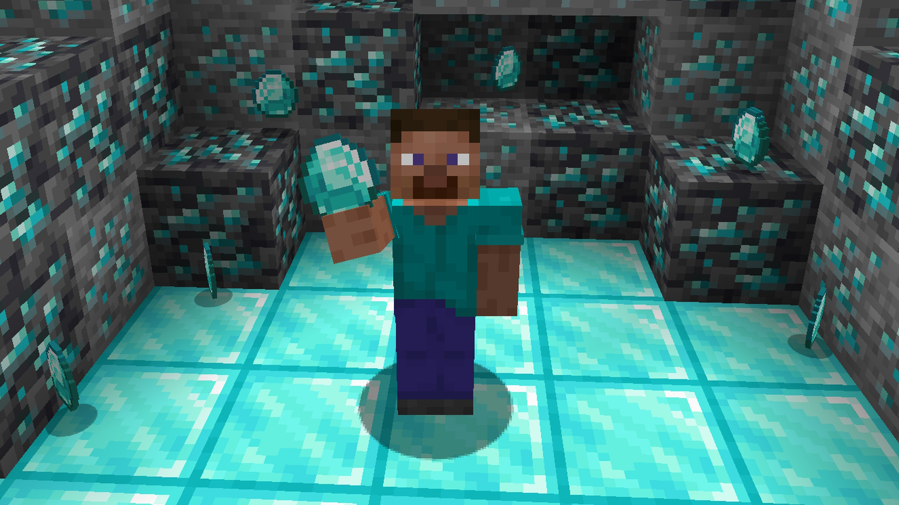
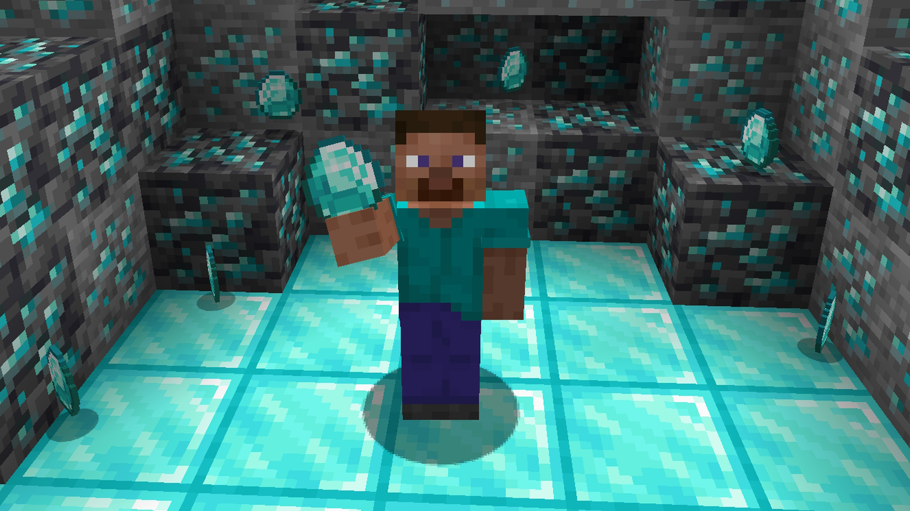
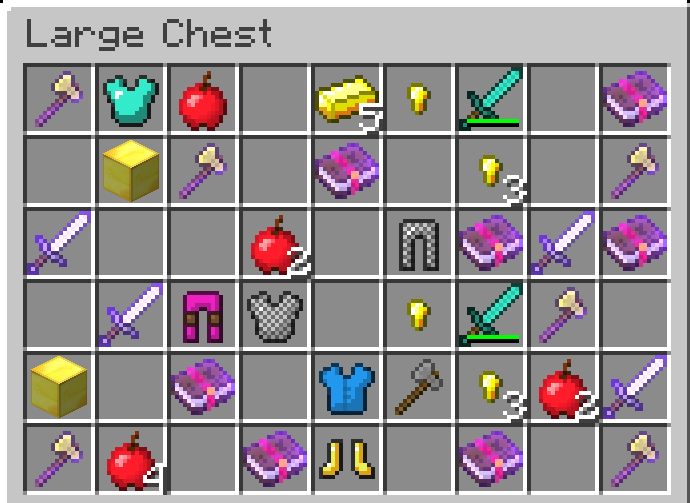

The Desert temple, is one of our favorite maps because of the loot you get given that you just started the game and have few resources.
 This is where you can possibly get one of your first diamonds.

Becareful though, for this comes with a cost
This is where you can possibly get one of your first diamonds.

Becareful though, for this comes with a cost Since you're still starting from the game, there are quite useful loots you can find in this building.
 Here is the useful guide that can help you plan whether to venture in this building to risk your life or not. Click on the link --- Loot guide